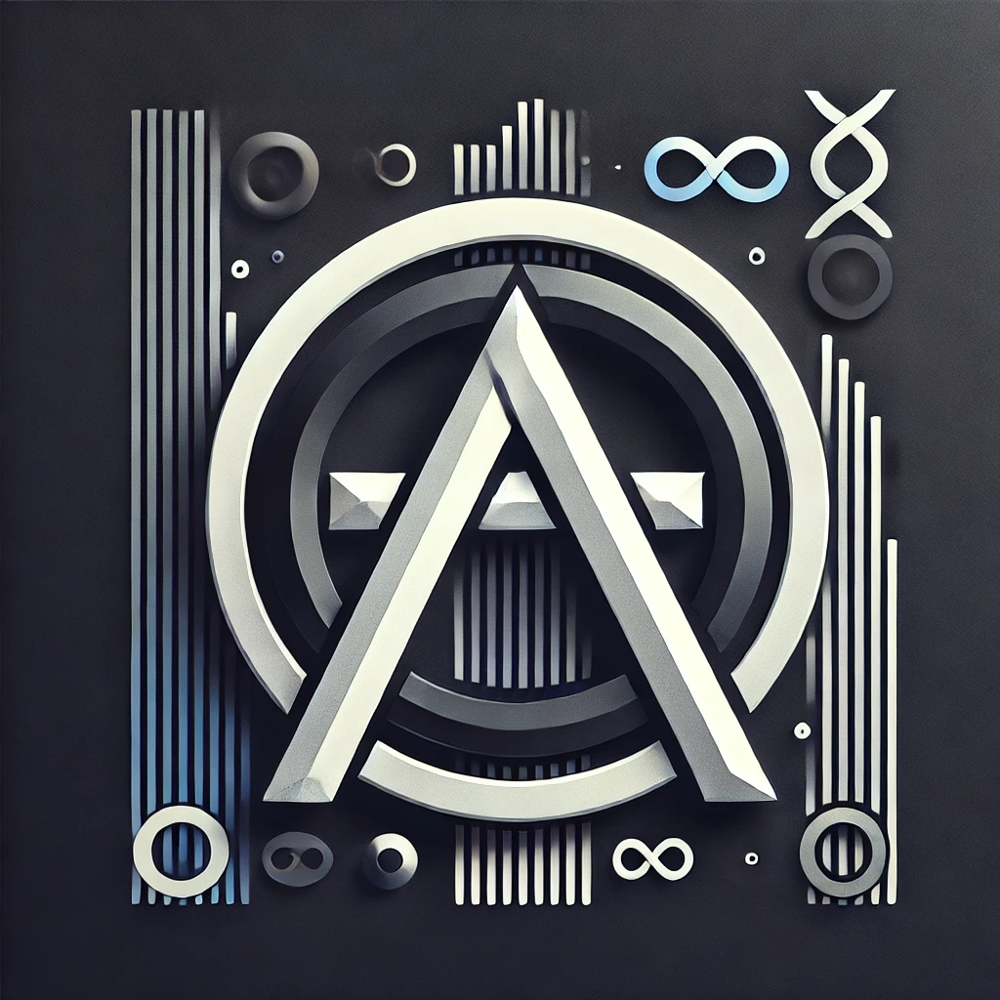

Data science and quantitative finance are not just professional interests; they are passions that I continuously explore. By combining data-driven approaches with financial theory, I work on projects like developing automated investment strategies that leverage machine learning and behavioral economics. Additionally, I am intrigued by how psychological factors such as cognitive biases impact decision-making in both individuals and markets. This deeper understanding drives my commitment to creating systems that optimize outcomes, both in personal and professional settings.
